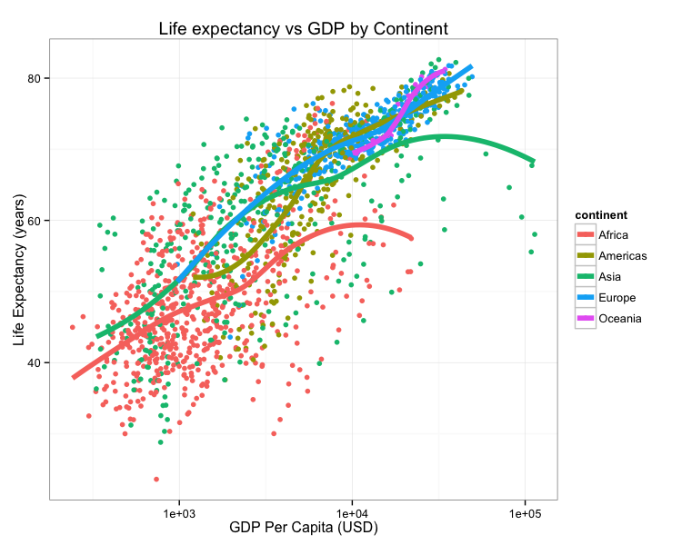

# Introduction
This is my first RMarkdown document!
# Let's embed some R code
Let's load the **Gapminder** data:
```{r}
library(dplyr)
library(readr)
gm <- read_csv('data/gapminder.csv')
head(gm)
```
The mean life expectancy is `r mean(gm$lifeExp)` years.
The years surveyed in this data include: `r unique(gm$year)`.
# Session Information
```{r}
sessionInfo()
``` 7 Reproducible Reporting with RMarkdown
Contemporary life science is plagued by reproducibility issues. This workshop covers some of the barriers to reproducible research and how to start to address some of those problems during the data management and analysis phases of the research life cycle. In this workshop we will cover using R and dynamic document generation with RMarkdown and RStudio to weave together reporting text with executable R code to automatically generate reports in the form of PDF, Word, or HTML documents.
Spend a few minutes to learn a little bit about Markdown. All you really need to know is that Markdown is a lightweight markup language that lets you create styled text (like bold, italics, links, etc.) using a very lightweight plain-text syntax: (like **bold**, _italics_, [links](https://blog.stephenturner.us/), etc.). The resulting text file can be rendered into many downstream formats, like PDF (for printing) or HTML (websites).
- (30 seconds) Read the summary paragraph on the Wikipedia page.
- (1 minute) Bookmark and refer to this markdown reference: http://commonmark.org/help/.
- (5-10 minutes) Run through this 10-minute in-browser markdown tutorial: http://commonmark.org/help/tutorial/.
- (5-10 minutes) Go to http://dillinger.io/, an in-browser Markdown editor, and play around. Write a simple markdown document, and export it to HTML and/or PDF.
- (10 minutes) See RStudio’s excellent documentation on Rmarkdown at http://rmarkdown.rstudio.com/. Click “Getting Started” and watch the 1 minute video on the Introduction page. Continue reading through each section here on the navigation bar to the left (Introduction through Cheatsheets, and optionally download and print out the cheat sheet). Finally, browse through the RMarkdown Gallery.
7.1 Who cares about reproducible research?
Science is plagued by reproducibility problems. Especially genomics!
- Scientists in the United States spend $28 billion each year on basic biomedical research that cannot be repeated successfully.1
- A reproducibility study in psychology found that only 39 of 100 studies could be reproduced.2
- The Journal Nature on the issue of reproducibility:3
- “Nature and the Nature research journals will introduce editorial measures to address the problem by improving the consistency and quality of reporting in life-sciences articles… we will give more space to methods sections. We will examine statistics more closely and encourage authors to be transparent, for example by including their raw data.”
- Nature also released a checklist, unfortunately with wimpy computational check (see #18).
- “Nature and the Nature research journals will introduce editorial measures to address the problem by improving the consistency and quality of reporting in life-sciences articles… we will give more space to methods sections. We will examine statistics more closely and encourage authors to be transparent, for example by including their raw data.”
- On microarray reproducibility:4
- 18 Nat. Genet. microarray experiments
- Less than 50% reproducible
- Problems:
- Missing data (38%)
- Missing software/hardware details (50%)
- Missing method/processing details (66%)
- NGS: run-of-the-mill variant calling (align, process, call variants):5
- 299 articles published in 2011 citing the 1000 Genomes project pilot publication
- Only 19 were NGS studies with similar design
- Only 10 used tools recommended by 1000G.
- Only 4 used full 1000G workflow (realignment & quality score recalibration).
Consider this figure:

How do we reproduce it? What do we need?
- The data.
- Data points themselves.
- Other metadata.
- The code.
- Should be readable.
- Comments in the code / well-documented so a normal person can figure out how it runs.
- How were the trend lines drawn?
- What version of software / packages were used?
This kind of information is rarely available in scientific publications, but it’s now extraordinarly easy to put this kind of information on the web.
Could I replicate Figure 1 from your last publication? If not, what would you and your co-authors need to provide or do so I could replicate Figure 1 from your last publication?
As scientists we should aim for robust and reproducible research
- “Robust research is about doing small things that stack the deck in your favor to prevent mistakes.”
—Vince Buffalo, author of Bioinformatics Data Skills (2015). - Reproducible research can be repeated by other researchers with the same results.
7.1.1 Reproducibility is hard!
- Genomics data is too large and high dimensional to easily inspect or visualize. Workflows involve multiple steps and it’s hard to inspect every step.
- Unlike in the wet lab, we don’t always know what to expect of our genomics data analysis.
- It can be hard to distinguish good from bad results.
- Scientific code is usually only run once to generate results for a publication, and is more likely to contain silent bugs. (code that may produces unknowingly incorrect output rather than stopping with an error message).
7.1.2 What’s in it for you?
Yeah, it takes a lot of effort to be robust and reproducible. However, it will make your life (and science) easier!
- Most likely, you will have to re-run your analysis more than once.
- In the future, you or a collaborator may have to re-visit part of the project.
- Your most likely collaborator is your future self, and your past self doesn’t answer emails.
- You can make modularized parts of the project into re-useable tools for the future.
- Reproducibility makes you easier to work and collaborate with.
7.1.3 Some recommendations for reproducible research
- Write code for humans, write data for computers.
- Make incremental changes. Work in small steps with frequent feedback. Use version control. See http://swcarpentry.github.io/git-novice/ for resources on version control.
- Make assertions and be loud, in code and in your methods. Add tests in your code to make sure it’s doing what you expect. See http://software-carpentry.org/v4/test/ for resources on testing code.
- Use existing libraries (packages) whenever possible. Don’t reinvent the wheel. Use functions that have already been developed and tested by others.
- Prevent catastrophe and help reproducibility by making your data read-only. Rather than modifying your original data directly, always use a workflow that reads in data, processes/modifies, then writes out intermediate and final files as necessary.
- Encapsulate the full project into one directory that is supported with version control. See: Noble, William Stafford. “A quick guide to organizing computational biology projects.” PLoS Comput Biol 5.7 (2009): e1000424.
-
Release your code and data. Simple. Without your code and data, your research is not reproducible.
- GitHub (https://github.com/) is a great place for storing, distributing, collaborating, and version-controlling code.
- RPubs (http://rpubs.com/) allows you to share dynamic documents you write in RStudio online.
- Figshare (http://figshare.com/) and Zenodo (https://zenodo.org/) allow you to upload any kind of research output, publishable or not, free and unlimited. Instantly get permanently available, citable DOI for your research output.
- “Data/code is available upon request” or “Data/code is available at the lab’s website” are completely unacceptable in the 21st century.
-
Write code that uses relative paths.
- Don’t use hard-coded absolute paths (i.e.
/Users/stephen/Data/seq-data.csvorC:\Stephen\Documents\Data\Project1\data.txt). - Put the data in the project directory and reference it relative to where the code is, e.g.,
data/gapminder.csv, etc.
- Don’t use hard-coded absolute paths (i.e.
-
Always set your seed. If you’re doing anything that involves random/monte-carlo approaches, always use
set.seed(). -
Document everything and use code as documentation.
- Document why you do something, not mechanics.
- Document your methods and workflows.
- Document the origin of all data in your project directory.
- Document when and how you downloaded the data.
- Record data version info.
- Record software version info with
session_info(). - Use dynamic documentation to make your life easier.
7.2 RMarkdown
RMarkdown is a variant of Markdown that lets you embed R code chunks that execute when you compile the document. What, what? Markdown? Compile? What’s all this about?
7.2.1 Markdown
Ever heard of HTML? It’s what drives the internet. HTML is a markup language - that’s what the ML stands for. The terminology evolved from “marking up” paper manuscripts by editors, where the editor would instruct an author or typesetter how to render the resulting text. Markup languages let you annotate text that you want to display with instructions about how to display it.
I emphasize text because this is fundamentally different than word processing. When you use MS Word, for example, you’re creating a special proprietary binary file (the .docx) file that shows you how a document looks. By contrast, writing in a markup language like HTML or Markdown, you’re writing plain old text, using a text editor. The toolchain used to render the markup text into what you see on a display or in a PDF has always been and will always bee free and open.
You can learn Markdown in about 5 minutes. Let’s open up a web-based Markdown editor like http://dillinger.io/ or use a desktop Markdown editor like MarkdownPad (Windows) or MacDown (Mac).
7.2.2 RMarkdown workflow
RMarkdown is an enhanced version of Markdown that lets you embed R code into the document. When the document is compiled/rendered, the R code is executed by R, the output is then automatically rendered as Markdown with the rest of the document. The Markdown is then further processed to final output formats like HTML, PDF, DOCX, etc.

7.4 Distributing Analyses: Rpubs
RPubs.com is a free service from RStudio that allows you to seamlessly publish the results of your R analyses online. Sign up for an account at RPubs.com, then sign in on your browser.
Make sure your RMarkdown metadata is set to render to HTML rather than PDF. Render the document. Now notice the little Publish button in the HTML viewer pane. Click this. Sign in when asked, and give your document a name (usually the same name as the title of your Rmd).
Here are a few examples of documents I’ve published:
- http://rpubs.com/turnersd/daily_show_guests: Analysis of every guest who’s ever been on The Daily Show with Jon Stewart.
- http://rpubs.com/turnersd/twoaxes: How to plot two different tracks of data with one axis on the left and one axis on the right.
- http://rpubs.com/turnersd/anscombe: Analysis of Anscombe’s Quartet data.
Note how RPubs doesn’t share your code! RPubs is a great way to share your analysis but doesn’t let you share the source code. This is a huge barrier to reproducibility. There are plenty of ways to do this. One way is to go to gist.github.com and upload your code as a text file, then link back to the gist in your republished RPubs document.
Freedman, et al. “The economics of reproducibility in preclinical research.” PLoS Biol 13.6 (2015): e1002165.↩︎
http://www.nature.com/news/first-results-from-psychology-s-largest-reproducibility-test-1.17433↩︎
Ioannidis, John PA, et al. “Repeatability of published microarray gene expression analyses.” Nature genetics 41.2 (2009): 149-155.↩︎
Nekrutenko, Anton, and James Taylor. “Next-generation sequencing data interpretation: enhancing reproducibility and accessibility.” Nature Reviews Genetics 13.9 (2012): 667-672.↩︎